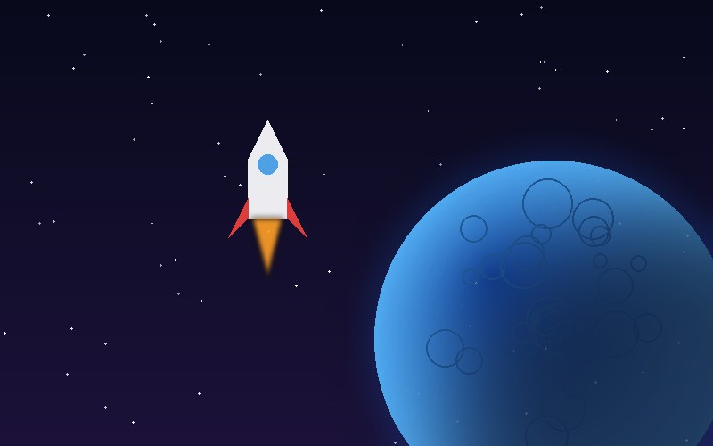
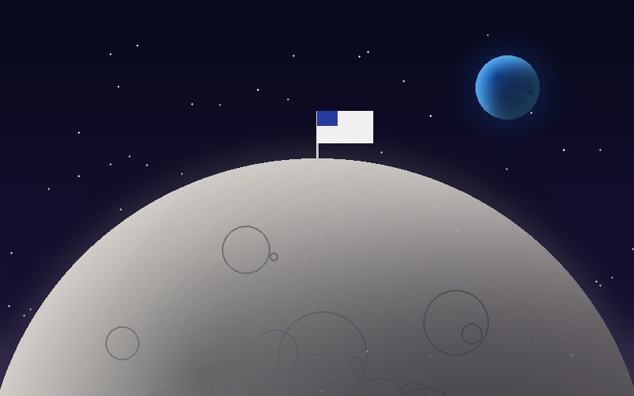

Exploración espacial
Todo lo que sabemos de los planetas lo aprendimos gracias a cohetes, sondas y astronautas.

En 1957 la Unión Soviética lanzó el Sputnik 1, el primer satélite artificial. Apenas cuatro años después, Yuri Gagarin se convirtió en el primer ser humano en orbitar la Tierra.
En 1969, la misión Apolo 11 llevó a Neil Armstrong y Buzz Aldrin a caminar sobre la Luna. Hasta hoy, solo doce personas han pisado su superficie.

Las sondas Voyager 1 y 2, lanzadas en 1977, visitaron los planetas exteriores y hoy viajan por el espacio interestelar. Siguen enviando datos casi 50 años después.
Línea del tiempo
- Sputnik 1, primer satélite artificial1957
- Yuri Gagarin orbita la Tierra1961
- Apolo 11 llega a la Luna1969
- Lanzamiento de las Voyager1977
- Telescopio James Webb2021